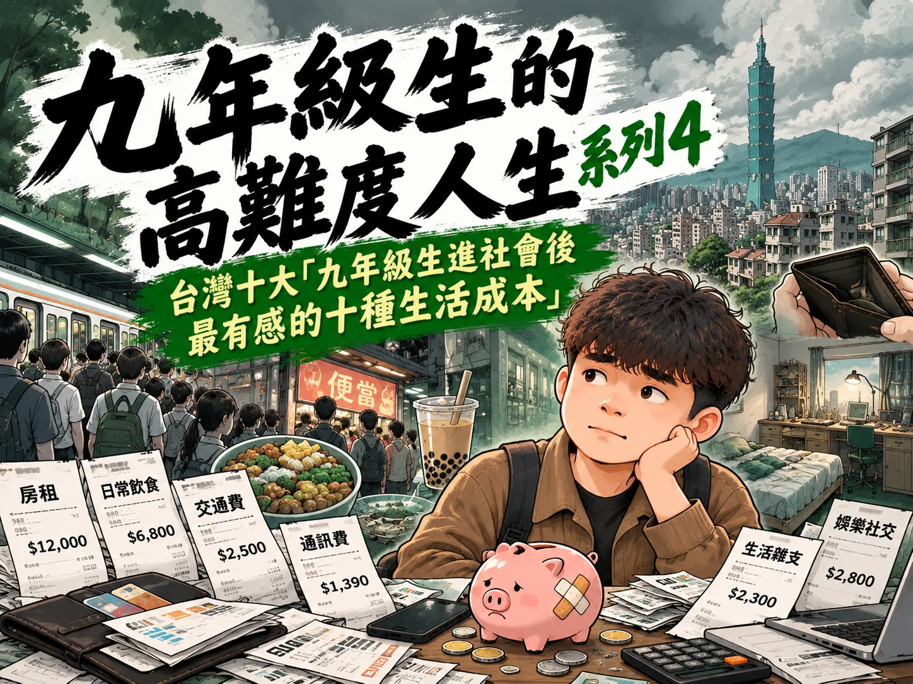
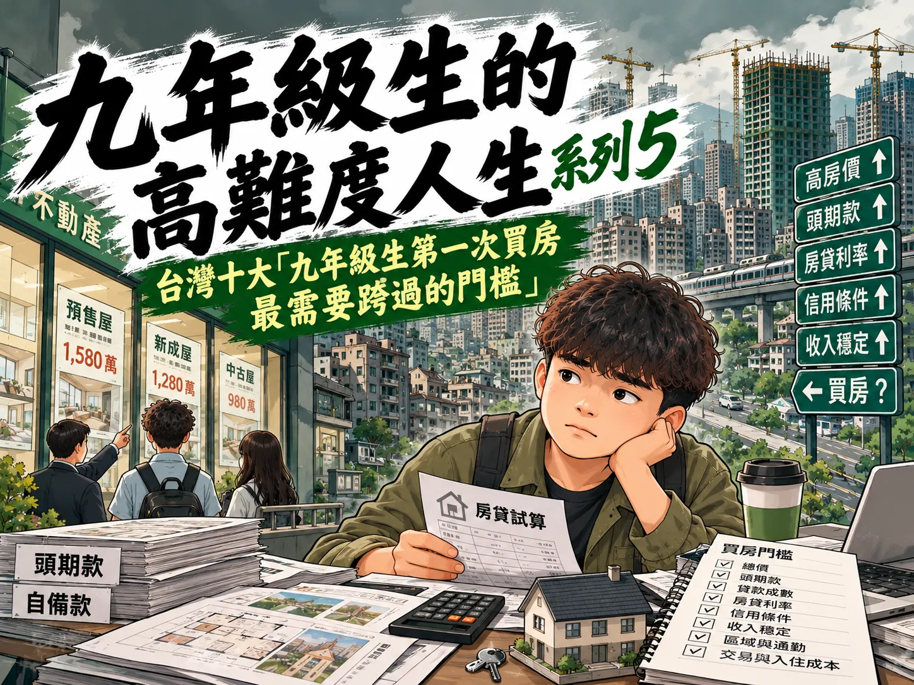
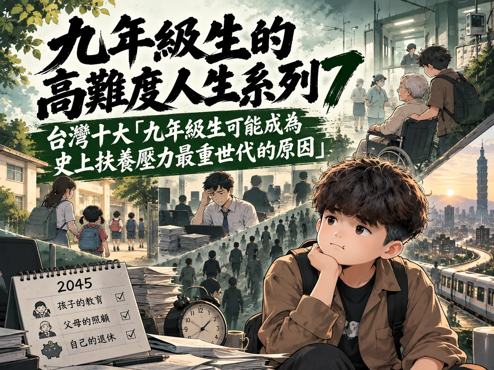

一個世代，正在改寫的人生公式
九年級生的高難度人生｜10集＋總摘要介紹
以2001～2010出生的台灣九年級生為核心，將10集內容串成一條人生線：教育、終身學習、AI職場、生活成本、住宅、家庭起跑線、扶養責任、數位環境、氣候風險，再到一生的時代代價。
開場：如果把九年級生的一生攤開來看，10集其實不是10個分離議題，而是一條從2026青年期一路延伸到2050與更後期的人生時間線。
- 01第1集｜讀書成功公式開始失效
- 02第2集｜離開學校以後，學習反而沒有結束
- 03第3集｜AI先改掉的，是工作的規則
- 04第4集｜第一份薪水開始遇到真實生活
- 05第5集｜從每月支出走到30年的住宅選擇
- 06第6集｜長大以後，才看見家庭起跑線
- 07第7集｜家庭支持之後，是家庭責任
- 08第8集｜有些壓力，在成年以前就已經開始
- 09第9集｜把時間拉到2050，環境也可能進入家庭帳單
- 10第10集｜把前9集重新接回一個人的一生
收束：高難度，不等於沒有選項；看見規則，也看見選項。
台灣十大「九年級生正在失效的讀書成功公式」

從大學文憑普及、初次求職、青年失業、起薪、產業報酬差距、技能要求、生活成本與住宅門檻，重新檢查「讀書→學歷→工作→收入→住宅→家庭」這條舊成功公式。
開場：畢業證書還保證什麼？
- 第10名大學文憑從稀缺優勢變成常見配備｜人人都有的門票
- 第9名畢業不等於找到方向｜校園到職場的空白
- 第8名青年失業率仍高於成熟年齡層｜第一份工作不好接
- 第7名大學起薪不是高薪保證｜3萬多元的現實起點
- 第6名同學歷不同產業，報酬開始分流｜科系與產業定價
- 第5名學歷之外還要證明能力｜從知道到做到
- 第4名第一份工作會產生職涯複利｜起薪不是終點
- 第3名薪資成長追的是生活成本｜工作只是第一關
- 第2名好工作與買得起房已是兩件事｜住宅門檻
- 第1名一條路走到底的成功公式失效｜標準答案消失
收束：畢業證書不是人生保證書，而是一張入場券。高難度，但不是沒有選擇。
台灣十大「九年級生一生可能需要重新學習最多次的領域」

從零售服務、金融會計、內容設計、智慧製造、淨零、醫療照護，一路談到資安、資料雲端、軟體AI與人機協作；以技術週期、產業轉型、再訓練頻率，檢視九年級生漫長職涯中的技能折舊與重新學習壓力。
開場：你以為畢業了，其實只是換了一種考試
- 第10名零售與服務業｜不是只學會服務，而是一直學新的服務方式
- 第9名金融、會計與法遵｜數字沒有變，規則與工具一直變
- 第8名內容、設計與行銷｜作品還沒過時，製作流程先過時
- 第7名製造與智慧機械｜從操作機器，到理解自動化系統
- 第6名能源、淨零與碳管理｜政策時間表直接走到2050
- 第5名醫療、健康與照護｜人不會消失，但照護方式會改變
- 第4名資安｜你學會防守的那一天，新的攻擊已經在路上
- 第3名資料、雲端與數據分析｜同樣是資料，十年後可能完全不是同一種工作
- 第2名軟體、AI與數位開發｜你用來工作的工具，本身就是最容易被更新的工具
- 第1名AI應用與人機協作｜不是AI工作者才要學AI，而是很多工作都要重新學怎麼工作
收束：真正的壓力，不是今天沒有技能，而是「學一次、用一生」愈來愈難；真正不能停止更新的，也許不是履歷，而是自己。
台灣十大「九年級生進職場後才發現AI改掉的規則」

把鏡頭推進九年級生真正進入職場之後：AI改變的不只是工具，而是企業對招聘、工時、績效、產出與人力配置的計算方式，並逐步重寫新人進場後的職場規則。
開場：第一天上班，你的同事可能不是另一個新人
- 第10名履歷不再只寫「我會什麼」｜還要證明你會怎麼用AI
- 第9名求職第一關先遇到演算法｜人還沒看到你，系統可能先篩一次
- 第8名新人最先被重新定義｜公司不只問你會不會做，還問你能不能和AI一起做
- 第7名完成工作不再等於完成績效｜產出基準可能被AI往上推
- 第6名工時沒有自動變短｜省下來的時間可能被塞進更多工作
- 第5名一個人的產能被重新估價｜以前一組人做的事，現在可能重新分工
- 第4名初階工作正在被拆開｜不是整份工作消失，而是其中一部分先交給AI
- 第3名會用AI變成基本配備後｜真正拉開差距的是判斷與驗證
- 第2名公司開始重新計算「需要幾個人」｜人力配置從職缺數轉向產出能力
- 第1名最先被AI改掉的是「工作的標準答案」｜人機協作成為新的職場規則
收束：AI不一定先把整份工作拿走，但可能先把職場的及格線、產出標準與工作方法往前推。
台灣十大「九年級生進社會後最有感的十種生活成本」

從第一份薪水進入真實生活，依衣著、通訊、醫療、進修、休閒、日用品、住宅能源、通勤、飲食與租屋，整理青年最有感的生活成本。
開場：薪水才進來，怎麼又不見了？
- 第10名衣著與鞋類｜不是天天買，卻不能永遠不買
- 第9名手機與通訊｜看起來不大，卻每個月準時出現
- 第8名醫療與保健｜平常感覺不到，一來就不能不付
- 第7名教育與技能進修｜畢業以後，學習反而開始收費
- 第6名社交與休閒｜最容易被刪掉，也最捨不得全部刪掉
- 第5名日用品與家務支出｜每一樣都不貴，加起來卻一直補貨
- 第4名水電瓦斯與居住能源｜冷氣一開，就開始計算
- 第3名交通與通勤｜工作還沒開始，先付一筆到公司的錢
- 第2名飲食與外食｜一天三次，最難假裝不存在
- 第1名居住與租屋｜一開始獨立，最大的帳單就來了
收束：真正昂貴的，也許是選擇變少。
台灣十大「九年級生第一次買房最需要跨過的門檻」

把第一次買房拆成十道實際門檻，從交易入住成本、區域通勤、信用與收入證明，到鑑價、頭期款、利率、月付、房價所得比與住宅總價。
開場：不是找到房子就能買。
- 第10名交易與入住成本｜房子買到了，帳戶卻不能歸零
- 第9名區域與通勤取捨｜不是同一個台灣，就有同一個買房難度
- 第8名信用紀錄｜第一次借這麼多錢，銀行也在看你的過去
- 第7名收入穩定與工作年資｜有薪水，不代表銀行眼中的收入都一樣
- 第6名鑑價與貸款成數｜成交價不是銀行一定認的價格
- 第5名頭期款｜還沒開始繳房貸，先要拿出第一大筆現金
- 第4名房貸利率｜利率只差一點，30年卻不是一點
- 第3名每月房貸負擔｜買得下來，不等於繳得下去
- 第2名房價所得比｜不是幾年不吃不喝，而是房價與所得拉開多遠
- 第1名住宅總價｜所有門檻最後都回到這個數字
收束：買房真正需要的，也許不只是一筆錢。
台灣十大「九年級生成年後才真正看見的家庭起跑線」
從資訊人脈、教育陪伴、居住地、能力投資、探索成本、家庭收入、可支配所得、住宅支持、跨代支援到家庭總財富，整理成年後逐漸浮現的家庭資源差異。
開場：長大以後，才發現大家不是從同一條線出發。
- 第10名家庭資訊與人脈｜你不是不知道，只是有人比你更早知道
- 第9名教育陪伴與文化資本｜有些家庭還能提供一整套看不見的陪跑
- 第8名居住地與生活資源｜住在哪裡，決定的不只是地址
- 第7名課外學習與能力投資｜有些學習要另外付錢
- 第6名高等教育與探索成本｜有人可以慢慢找方向，有人必須先找到收入
- 第5名父母工作與家庭收入穩定度｜薪水不只是一個人的薪水
- 第4名家庭可支配所得｜每年流進家的錢，會慢慢變成不同的人生空間
- 第3名自有住宅與居住支持｜家裡有沒有一個位置讓你回去，成年後差很多
- 第2名可動用資產與跨代支援｜關鍵時刻家裡能不能拿出一筆錢
- 第1名家庭總財富｜最後真正拉開距離的，是一個家庭累積了多少年
收束：看見起跑線，不是為了否定努力，而是從真正的位置開始。
台灣十大「九年級生可能成為史上扶養壓力最重世代的原因」

從家庭規模、晚婚晚育、長壽與長照，到工作人口縮小、勞動力高齡化、扶養比、潛在支持比與制度支撐，觀察未來家庭責任可能如何集中。
開場：你現在還年輕，但未來可能同時扶養三個方向。
- 第10名兄弟姊妹變少｜家庭照顧責任更難分攤
- 第9名晚婚晚育｜把育兒與照顧擠在同一段人生
- 第8名長壽之後的照顧期｜活得更久，照顧期也可能變長
- 第7名長照需求與人力缺口｜照顧者本身也不夠多
- 第6名工作人口底盤縮小｜支撐社會的人變少
- 第5名勞動力也在高齡化｜工作的人不只變少，還會一起變老
- 第4名扶養比一路升高｜每100名工作年齡人口要對應的人愈來愈多
- 第3名潛在支持比下降｜從3.2個人對1位老人走向不到1個人
- 第2名制度也要重新設計｜長照、醫療、退休制度由更小底盤支撐
- 第1名三代責任同時重疊｜向上父母、向下子女、向內自己的未來
收束：人口不是命運，真正要改的是「誰來扛」的方式。
台灣十大「九年級生從青春期就比上一代多承受的數位壓力」
比較的不是哪一代比較脆弱，而是媒體環境如何變得更早、更久、更多平台、更即時，也讓比較、評價、數位足跡與注意力壓力更持續。
開場：青春期第一次變成「永遠在線」。
- 第10名網路從「要去使用」變成「一直都在」
- 第9名第一次接觸網路，已經往童年提前
- 第8名每天近4小時，數位生活占掉更大的一塊日常
- 第7名一個青春期，同時活在很多平台
- 第6名下課鐘響了，社交卻沒有下課
- 第5名比較從身邊幾十個人，擴大成永遠刷不完的展示牆
- 第4名按讚、觀看、追蹤，把「別人怎麼看我」變成數字
- 第3名短影音與演算法，讓「再看一支」沒有自然終點
- 第2名網路霸凌與數位足跡，讓青春期的傷害更難在放學後停止
- 第1名青春期第一次變成「24小時可比較、可評價、可追蹤」
收束：問題不是年輕人比較脆弱，而是青春期的環境改變了。
台灣十大「2050年九年級生可能付出的氣候帳單」
第9集已依最新完整旁白更正：正式排名從交通與運具轉型開始，依序進入碳定價、保險金融、食品農漁業、乾旱供水、公共建設、住宅韌性、高溫、豪雨災損，最後收束到住宅與家庭資產風險。
開場：2050的帳單，不一定寫著「氣候變遷」。
- 第10名交通與運具轉型，換車不只是換一種動力
- 第9名碳定價與產業轉型，成本可能沿著供應鏈移動
- 第8名保險與金融風險，房子沒有淹水也不代表沒有成本
- 第7名食品與農漁業風險，餐桌價格更怕的是不穩定
- 第6名乾旱與供水韌性，水費之外還有一整套看不見的成本
- 第5名公共基礎建設調適，你沒收到帳單，不代表沒有付成本
- 第4名住宅隔熱與韌性，2050的房子不只要漂亮，還要扛得住氣候
- 第3名極端高溫，冷氣、健康與工作一起增加壓力
- 第2名豪雨、淹水與災後修復，一次事件就可能打亂家庭財務
- 第1名住宅與家庭資產風險，最大的帳單可能不是每月支出，而是多年累積的家
收束：氣候帳單不是命定帳單。
閱讀第9集完整旁白
01｜開場｜2050的帳單，不一定寫著「氣候變遷」
2050年的某個夏天，一位45歲的九年級生下班回家。
門一打開，冷氣已經運轉了一段時間。桌上放著這個月的電費通知、社區外牆防水工程分攤單、住宅保險續約資料，冰箱旁還貼著剛從超市帶回來的採買明細。
幾天前才下過一場強降雨。地下停車場入口堆著防水擋板，社區管委會正在討論抽水設備要不要更新。孩子問他，為什麼最近水果有些變貴？家裡長輩則提醒，天氣太熱，白天不要在外面待太久。
這些支出上面，都沒有印著「氣候變遷」四個字。
可是到了2050，氣候風險、能源轉型、住宅調適、食品供應、防災工程與保險，可能已經透過不同方式，進入一個普通家庭的日常帳本。
今天還在念書、剛進職場，或正在找人生方向的九年級生，大約出生在2001到2010年。到了2050，他們大約40到49歲。
那不是遙遠的老年，而可能正是房貸、孩子、父母、工作與家庭責任同時最重的階段。
所以這一集要問的，不是2050會不會世界末日，也不是要預言一個家庭一定會多花多少錢。
我們真正想問的是，如果現在已經看得見的氣候趨勢持續，如果臺灣持續進行淨零轉型與氣候調適，那麼到了2050，九年級生最可能在哪些地方感受到一張「看不見的氣候帳單」？
有些帳單由家庭直接支付。
有些帳單由企業先承擔，再可能透過商品與服務價格部分傳導。
還有一些帳單，不會寄到你家，而是由政府、地方建設與整個社會共同支付。
而真正重要的是，這些帳單並不是完全命定的。
因為今天多做一分節能、調適與防災，可能就是在替2050少留下一分損失。
接下來，我們從第10名一路看到第1名。
看看2050的九年級生，可能面對哪些最具體、也最貼近生活的氣候帳單。
02｜十大怎麼排｜家庭成本、公共成本、風險
先說清楚，接下來的十大，不是政府公布的官方排行榜。
「氣候帳單」也不是一張真的會從政府寄到你家的稅單，而是我們用來理解未來生活成本的一個紀錄片分析框架。
排名主要看三件事。
第一，是家庭成本。
也就是一個家庭可能直接碰到的支出，包括能源、住宅改善、食品、交通、保險與災後修復。
第二，是公共成本。
例如防洪、供水、電網韌性、公共建築改善、道路與交通設施維護，以及氣候調適需要的公共投資。這些錢不一定直接出現在家庭帳單，但最後仍是整個社會要共同負擔的資源。
第三，是風險。
我們看的是影響範圍、持續時間、發生的不確定性，以及這些風險是否可能在九年級生40到49歲的人生階段，和家庭責任重疊。
資料以環境部與行政院主計總處為主要基礎，再搭配國發會、中央氣象署、經濟部、農業部及其他官方資料。
目前臺灣的2050淨零路徑，包含能源、產業、生活與社會轉型，也透過節能、電力系統與儲能、運具電動化、淨零綠生活、綠色金融與公正轉型等策略推進。
這裡有一個很重要的觀念。
淨零轉型有投入成本，但也可能降低能源使用、空氣污染與未來氣候損失。氣候調適也要花錢，但如果不做，災害來臨時可能付出更大的修復成本。
所以我們不把所有轉型都算成負擔，也不把所有未來物價變動都怪給氣候變遷。
我們要看的，是哪些成本已經有足夠證據顯示，值得九年級生從現在開始注意。
第10名，先從每天都可能使用的交通開始。
03｜第10名｜交通與運具轉型，換車不只是換一種動力
想像2050，一個45歲的九年級生準備換掉用了多年的家庭用車。
他考慮的問題，可能已經和2026不太一樣。
臺灣2050淨零路徑把運具電動化及無碳化列入關鍵戰略之一。這代表未來幾十年，車輛、充電設施、大眾運輸、停車空間與能源系統，都可能持續調整。
對家庭來說，帳單不只是「買一台車多少錢」。
它還可能包括充電設備、住宅停車空間的電力改善、不同運具的使用成本，以及家庭是否乾脆從買車轉向大眾運輸、共享運具或其他移動方式。
但這裡不能簡化成「電動化一定比較貴」。
技術成熟、市場規模、能源價格與政策都會改變成本；電動化也可能降低部分燃料與維修支出。
因此，第10名真正要看的，是轉型本身帶來的家庭設備更新與生活方式調整。
這是一筆可能分散在很多年的帳，不一定突然出現，卻可能慢慢改變一個家庭對交通支出的配置。
而當交通開始轉型，下一筆帳單，可能連你買東西的價格都會碰到。
04｜第9名｜碳定價與產業轉型，成本可能沿著供應鏈移動
2025年，臺灣碳費制度正式上路。
現行制度的直接徵收對象是符合規定的高排放事業，不是每個家庭收到一張「碳費帳單」。
這一點一定要說清楚。
但當企業投入節能設備、低碳製程、能源轉型或支付碳費時，整個產業的成本結構可能改變。部分成本是否、以及有多少會反映到商品價格，要看產業競爭、市場供需、技術進步與政策設計，不能直接畫上等號。
到了2050，九年級生可能已經很習慣看到產品標示能源效率、碳資訊或循環使用方式。
家庭真正面對的，可能不是一張名叫「碳費」的單據，而是選擇商品、住宅設備、交通工具與服務時，低碳轉型已經成為價格的一部分。
但另一面也不能忽略。
如果企業因節能而降低能源使用，如果新技術降低生產成本，如果循環利用減少原料浪費，轉型也可能創造節省。
所以第9名不是「碳費會讓什麼都變貴」。
真正的氣候帳單，是整個經濟在轉型時，誰先投入、誰得到節省、誰承受比較大的負擔。
這也就是為什麼官方淨零路徑同時強調公正轉型。
因為2050的問題，不只是多少錢，而是這些成本怎麼分。
接下來，第8名，帳單會更直接地碰到家庭資產。
05｜第8名｜保險與金融風險，房子沒有淹水也不代表沒有成本
2050，一個九年級生家庭準備買房。
他們看的不只坪數、學區、捷運距離，也開始注意淹水潛勢、坡地風險、建築耐候能力，以及保險能不能提供適當保障。
氣候風險進入金融與保險，不代表未來每個人的保費一定上漲，也不能預言哪一區房價一定下跌。
但風險評估愈精細，住宅位置、建築條件與災害暴露程度，就可能愈難被忽略。
對家庭來說，可能出現三種成本。
第一種，是為風險投保。
第二種，是為降低風險而改善住宅。
第三種，是災害真的發生後，保險沒有完全涵蓋的自付損失。
這些支出最大的特點，就是平常可能感覺不到。
直到買房、貸款、續保或災害發生時，風險才突然從地圖上的顏色，變成家庭資產負債表上的數字。
而對2050大約40到49歲的九年級生來說，住宅很可能正是家庭最大的資產之一。
因此，氣候風險不只是一場雨，也可能是一個家庭要不要把幾十年的積蓄放在某個地方的問題。
下一名，從房子走進廚房。
06｜第7名｜食品與農漁業風險，餐桌價格更怕的是不穩定
氣候帳單最容易被感受到的地方之一，就是每天吃的東西。
高溫、乾旱、豪雨、颱風、病蟲害與水資源變化，都可能影響農業生產。
但要特別注意，食品價格每天都受到很多因素影響。
國際原物料、匯率、運輸、產量、季節、疾病與市場供需，都可能改變價格，所以不能看到蔬菜變貴，就全部歸因於氣候變遷。
真正值得注意的是「不穩定」。
如果極端天氣讓產量與品質更容易波動，農民可能需要更多耐逆境品種、溫網室、灌溉、防災、冷藏與保險投入。
這些都是提高農業韌性的成本。
想像2050的一個家庭。
颱風或豪雨過後，市場裡某些蔬菜暫時變少；炎熱季節裡，部分農漁產品生產條件改變。家庭未必每一天都多付錢，但可能更常遇到價格與供應波動。
公共部門也要投入預警、農業科技、災害救助與糧食安全體系。
所以第7名的氣候帳單，不是一顆高麗菜到底會賣多少錢。
而是為了讓2050的餐桌仍然穩定，從農場、冷鏈、市場到政府，要投入多少韌性成本。
而農業最離不開的資源，就是水。
07｜第6名｜乾旱與供水韌性，水費之外還有一整套看不見的成本
臺灣不是沒有雨。
真正麻煩的是，雨下在什麼地方、什麼時間，以及能不能留下來。
中央氣象署整理的氣候研究指出，暖化情境下，臺灣可能出現乾季更乾、濕季更濕，降雨更集中的趨勢。
這代表未來可能同時面對兩種看似矛盾的情況。
一邊是短時間下很多雨。
另一邊是連續沒有雨的時間變長。
到了2050，一個九年級生家庭看到的可能只是水龍頭正常出水，但背後可能已經有水庫調度、管網改善、再生水、節水設備與備援系統在支撐。
家庭端可能投入省水設備、儲水或住宅管線改善。
產業與農業端則需要提高用水效率。
公共端更要處理水源、調度、管線與抗旱能力。
所以這筆帳不能簡化成「未來水費一定上漲」。
水價是政策與制度問題，不能用氣候趨勢直接預測。
真正的成本，是為了讓乾旱發生時，家庭仍然能用水、產業仍能生產、農業仍能灌溉，整個社會必須提前建立更有韌性的供水系統。
而當水不是太少，而是一下子太多，另一張更昂貴的帳單就會出現。
08｜第5名｜公共基礎建設調適，你沒收到帳單，不代表沒有付成本
一場暴雨來臨之前，城市裡有很多東西已經先開始工作。
抽水站、滯洪池、排水系統、道路邊坡、橋梁、捷運防洪設施、通訊與電力設備，都在抵抗極端天氣。
中央氣象署的氣候風險資料指出，高溫可能增加電力負荷，暴雨與洪水可能使排水系統超載，強風、豪雨與坡地災害也可能影響交通、通訊與電力設施。
更長期的問題，是極端氣候可能加速基礎設施老化，提高維修與管理需求。
這就是第5名最容易被忽略的地方。
因為家庭不會收到一張寫著「今天幫你加固橋梁」的帳單。
但是公共建設需要預算，需要工程，需要維護。
2050的九年級生，可能享受更好的排水、更耐熱的道路、更有韌性的電網與公共運輸，同時整個社會也要為這些安全能力投入資源。
這筆帳的價值不能只看「花了多少」。
更要看它避免了多少停電、淹水、交通中斷與災害損失。
調適不是因為災害一定發生，而是因為當風險存在時，城市不能什麼都不做。
接下來，第4名，公共建設之外，自己的家也要調整。
09｜第4名｜住宅隔熱與韌性，2050的房子不只要漂亮，還要扛得住氣候
一間2026住起來還可以的房子，到了2050，可能要面對更長時間的高溫、更集中的強降雨，以及設備老化。
對九年級生來說，這會是一個非常現實的問題。
因為2050的他們大約40到49歲，很可能正在繳房貸、整修房屋，或照顧一個有老人和孩子的家庭。
住宅調適可能包括隔熱、遮陽、通風、高效率冷氣、防水、窗戶改善、屋頂處理，以及低窪地區需要的防洪措施。
這些不一定每戶都要做，也不可能現在就算出2050每戶會花多少。
但有一個方向很清楚。
當高溫與極端天氣成為建築設計必須考慮的條件，住宅的「便宜」就不能只看買下來的價格。
如果房子隔熱差，後面可能用更多電。
如果防水差，豪雨後可能增加修繕。
如果設備效率低，長期能源支出也可能比較高。
反過來說，早期做好節能與韌性設計，雖然需要投資，卻可能降低後續使用成本與災害損失。
所以第4名不是單純的裝潢費。
而是2050買房與住家的標準，可能從「住得進去」，進一步變成「能不能在更熱、更不穩定的氣候裡住得久」。
下一名，會讓這間房子裡最重要的一台設備，運轉得更久。
10｜第3名｜極端高溫，冷氣、健康與工作一起增加壓力
2024年，臺灣已經出現測站溫度突破歷史紀錄的情況。
中央氣象署也把高溫列為氣候變遷下重要的風險之一。
對家庭來說，高溫最直覺的帳單就是冷氣。
天氣愈熱，冷房時間可能愈長，用電需求也可能增加。
但真正的高溫成本不只在電表。
戶外工作者面對熱傷害風險。
老人、幼兒與慢性病族群需要更安全的室內環境。
學校、醫院、車站、公共空間與工作場所，也需要降溫、遮蔭、通風與防熱措施。
想像2050的九年級生。
白天上班時，公司要處理工作場所高溫；回家後，要注意父母和孩子能不能安全度過熱夜。
如果住家隔熱不好，冷氣就得更努力。
如果城市缺乏樹蔭與降溫空間，戶外活動的時間也可能被壓縮。
這是一張同時包含能源、健康與勞動的帳單。
但它也提醒我們，節能冷氣、建築隔熱、都市綠化與高溫預警，不只是環保措施，也是在降低家庭與公共成本。
第3名是熱。
第2名，則是一場可能在幾個小時內把多年累積變成修復費的雨。
11｜第2名｜豪雨、淹水與災後修復，一次事件就可能打亂家庭財務
氣候研究對未來降雨的推估，比溫度更有不確定性。
但臺灣相關研究顯示，在暖化情境下，降雨可能變得更集中，乾季更乾、濕季更濕，極端降雨風險值得高度重視。
這對臺灣特別重要。
因為我們有高密度城市、山坡地、河川、沿海低窪區，也有大量住宅與交通設施集中在有限土地上。
一場強降雨的家庭帳單可能非常具體。
機車、汽車泡水。
一樓住家進水。
電梯、地下室、機電設備受損。
牆面重新整理。
家具更換。
工作被迫中斷。
如果住在坡地或災害高風險地區，面對的可能不只是修理，而是居住安全。
公共端則要支付搶修、排水、道路、橋梁、邊坡與復建成本。
但是這裡仍然要保持一個重要界線。
不能把每一次豪雨、每一次淹水都直接說成「氣候變遷造成」。
災害損失還受到土地利用、排水能力、建築條件、地形與防災準備影響。
也正因如此，調適才有意義。
如果災害完全不可改變，那麼防洪與韌性建設就沒有作用。
事實恰恰相反。
同樣的雨，準備不同，損失可能完全不同。
而這也帶我們進入第1名。
因為2050真正最大的氣候帳單，可能不是某一張單據，而是「住在哪裡、住什麼房子，以及整個家庭累積的資產暴露在多大的風險裡」。
12｜第1名｜住宅與家庭資產風險，最大的帳單可能不是每月支出，而是多年累積的家
對大多數家庭來說，一棟房子不是普通消費品。
它可能是幾十年的房貸，是退休準備，是留給下一代的資產，也是颱風、豪雨、高溫來臨時，一家人真正躲進去的地方。
所以我們把住宅與家庭資產風險排在第1名。
不是因為2050房價一定會因氣候上漲或下跌。
這種預測沒有足夠根據，也受到人口、利率、供需、交通、產業與政策等太多因素影響。
真正的原因是，一旦氣候風險和家庭最大的資產重疊，影響可能非常長。
低窪住宅可能需要更強的防洪能力。
老舊建築可能需要隔熱、防水與設備更新。
坡地、沿海或其他高暴露地區，需要更仔細評估災害風險。
社區共同設施也可能需要投入更多維護。
而住宅的氣候韌性，最後會和能源、保險、健康、災害修復全部連在一起。
想像一位2050年45歲的九年級生。
他每個月看到的可能只是房貸、管理費、水電費。
可是藏在後面的，是這間房子能不能抵抗熱、能不能面對強降雨、社區有沒有備援設備，以及一旦災害發生，家庭有沒有足夠的財務緩衝。
這就是為什麼「氣候帳單」最值得注意的地方，不一定是每個月多幾百元或幾千元。
真正大的風險，可能是多年累積的資產，在一次災害或長期環境變化中受到影響。
同時，這也是最能透過今天開始準備而改變的一張帳單。
建築能效可以改善。
社區防災可以提升。
城市排水可以強化。
風險資訊可以更透明。
保險與金融工具可以更完整。
家庭也可以在買房、整修與設備更新時，把氣候韌性納入選擇。
第1名不是要告訴九年級生「2050不要買房」。
而是提醒，2050判斷一間房子的價值，可能不能只看地段、坪數與裝潢。
還要多問一句。
這個家，準備好面對未來的氣候了嗎？
13｜結尾｜氣候帳單不是命定帳單
回到一開始那位2050年45歲的九年級生。
桌上還是有電費、保險、食品、住宅維修與各種生活支出。
但是現在我們知道，不能把其中每一塊錢都叫做氣候成本。
也不能把2050想像成一個所有東西都變貴、所有災害都變嚴重的單一路線未來。
真正比較接近現實的答案，是風險與轉型會一起發生。
一方面，氣候變遷可能增加高溫、極端降雨、水資源與農業等壓力。
另一方面，臺灣也正在進行能源轉型、節能、運具轉型、綠色金融、淨零生活與氣候調適。
這些措施需要投入資源。
但如果它們能減少能源浪費、降低災害損失、改善健康、提高住宅與城市韌性，那麼今天付出的部分成本，也可能是在避免2050更大的帳單。
這就是這一集最重要的結論。
氣候帳單，不是命定帳單。
真正需要討論的，不只是「要不要花錢」，而是現在花在哪裡，能不能降低未來的風險；成本由誰承擔，效益由誰得到；收入較低、住宅條件較差、工作暴露較高的人，會不會承受不成比例的負擔。
這也是公正轉型真正困難的地方。
2026的九年級生，很多人可能還沒有自己的房子，還沒有孩子，甚至還沒決定未來在哪一座城市生活。
但到了2050，他們大約40到49歲。
那時候，他們會是家庭的主要支柱，也是社會最重要的工作人口之一。
所以今天談2050，不是替一個遙遠年代擔心。
而是在問，我們現在留下什麼樣的能源系統、住宅、城市、水資源、農業與防災能力給他們。
如果今天什麼都不做，2050可能付的是災後修復的錢。
如果今天開始調適，2050付的可能是更有效率、更安全、更有韌性的投資。
兩者都需要成本。
差別在於，一種是在風險發生後被迫支付，另一種是在風險發生前主動選擇。
九年級生真正要面對的，不只是2050會不會更熱。
而是今天的選擇，會決定2050哪些成本成為帳單，哪些風險能被提前降低。
台灣十大「九年級生這一生最可能承擔的時代代價」
第10集已依最新完整旁白更正：把數位、全球風險、氣候、AI、所得、住宅、家庭照顧、人口與公共制度放回一整個人生時間軸，最後聚焦起點差異被時間放大的長期複利。
開場：有些代價，不是在20歲一次付清。
- 第10名數位生活全面化，方便背後是持續更新的能力成本
- 第9名全球風險反覆傳導，個人也會收到世界變動的帳單
- 第8名氣候與淨零轉型，生活環境本身也在改變
- 第7名AI與職場重組，一份工作可能不再等於一套技能做到退休
- 第6名所得累積速度，決定人生很多選擇能不能提早開始
- 第5名居住成本與資產門檻，差距可能從30歲一路延伸到退休
- 第4名家庭變小，照顧責任可能集中到更少的人身上
- 第3名工作人口縮減，少數工作者要支撐更高齡的社會
- 第2名社會安全與公共財政，未來要在更多需求與有限資源間選擇
- 第1名起點差異的長期複利，最難追回的是被時間放大的選擇差距
收束：時代有代價，但人生不是一張已經開好的帳單。
閱讀第10集完整旁白
台灣十大「九年級生這一生最可能承擔的時代代價」
01｜開場｜有些代價，不是在20歲一次付清
2026，一個2005年出生的年輕人21歲。
他可能還在大學，也可能剛拿到第一份薪水。第一次看到薪資單時，他最在意的，也許只是這個月能存多少錢。
到了2035前後，他30歲上下。問題開始變多了。工作能不能繼續往上走？租屋要租多久？要不要買房？要不要結婚？如果有孩子，誰來照顧？
到了2050，他45歲。這時候，人生的帳單可能同時從好幾個方向送來。房貸還沒結束，父母已經老了，孩子還需要支持，自己的工作技能也可能必須重新學習。夏天更熱，住宅需要改善，保險、醫療、照顧與生活成本，都可能變成家庭財務的一部分。
再往後，他還會遇到退休、健康、長照，以及一個人口比今天更少、年齡更高的台灣。
所以這一集，我們不是要問，九年級生是不是最慘的一代。
我們真正要問的是，如果把時間拉長到30年、40年，甚至一整個人生，哪些時代條件最可能一直跟著他們？
有些代價，不是在20歲一次付清，而是會跟著一個世代慢慢走完整個人生。
這就是今天要談的，台灣十大「九年級生這一生最可能承擔的時代代價」。
02｜十大怎麼排｜影響人口、持續年數、財務成本、不可逆程度
先說清楚，這不是政府公布的官方十大，也不是對每一個九年級生人生的預言。
這裡所說的九年級生，是2001到2010出生的一代。到了2026，大約16到25歲。
我們把工作、所得、住宅、人口、家庭、照顧、數位環境、人工智慧、氣候與全球風險放在一起比較，再用四個標準排序。
第一，影響人口。這件事會只影響少數人，還是可能進入多數人的人生？
第二，持續年數。它是一兩年的短期衝擊，還是可能陪一個人走20年、30年？
第三，財務成本。它會不會進入薪水、房租、房貸、照顧、保險、生活支出或公共支出？
第四，不可逆程度。有些問題可以晚一點再處理，有些問題一旦錯過時間，就很難完全補回來。
主要資料來自國家發展委員會、行政院主計總處、內政部、勞動部、數位發展部、衛生福利部與環境部。
未來人口與氣候資料如果是官方推估，我們就把它當推估，不把它說成已經發生的事。
而且同一個年代出生，不代表擁有同一種人生。住在台北和住在嘉義不同，有沒有家庭住宅不同，從事科技業、製造業、服務業也不同。
因此，這份排名談的是結構，不是命運。
研究後，我們把最可能跨越人生多個階段的十項代價，從第10名排到第1名。
03｜第10名｜數位生活全面化，方便背後是持續更新的能力成本
第10名，是數位生活全面化之後，持續更新自己的能力成本。
對九年級生來說，網路不是後來才出現的工具，而是成長環境的一部分。
數位發展部2025年的數位近用調查顯示，台灣家戶連網率已達93.4%，12歲以上人口個人上網率達90.3%。網路銀行、雲端服務、行動支付、社群平台，都已經進入日常。
這代表一件事。未來的數位能力，可能不再是一項加分技能，而越來越接近基本生活能力。
今天你學會一套軟體，幾年後介面改了。今天熟悉某個平台，下一個工作可能換成另一套系統。人工智慧工具加入之後，工作的差異也不只是「會不會用電腦」，而是能不能判斷資訊、驗證內容、保護個資，並且把新工具真正用進工作。
這項代價不一定直接寫在帳單上。
它可能是一個上班族晚上重新學軟體的兩個小時，也可能是一個40歲工作者發現，公司導入新的人工智慧流程，而自己必須重新理解原本熟悉的工作。
但數位轉型也不等於壞事。工具可以提高效率，也可能創造新的工作。
真正的代價是，九年級生可能比過去更難把「學會一項技能」當成一次性的事情。
他們這一生，很可能要不斷重新學習。
而比工具更新更難控制的，是來自台灣以外的變化。
04｜第9名｜全球風險反覆傳導，個人也會收到世界變動的帳單
第9名，是全球供應鏈、能源、疫情與地緣政治等外部風險，反覆傳導到工作與生活。
九年級生成長的過程，已經看過一次非常清楚的示範。
疫情發生時，一個遠方的事件，可以改變航班、工廠、學校、餐廳、就業與物價。全球供應鏈一旦卡住，最後影響的可能不是國際新聞，而是你等不到的零件、公司的訂單，以及家庭採買的價格。
台灣是高度參與全球貿易的經濟體。這使台灣能從世界市場得到機會，也意味著外部景氣、原物料、能源與供應鏈變動，可能更快傳進產業與就業。
假設一位2004年出生的青年進入出口產業。他真正面對的職涯風險，不只來自自己的工作表現，也可能來自公司接單地區改變、供應鏈重組，或國際市場需求突然轉弱。
但這裡不能把風險說成預言。
我們不知道未來哪一年會發生什麼國際事件，也不能預測特定衝突一定發生。
可以確定的只有一件事：九年級生的職涯，不會在一個與世界隔離的台灣裡進行。
因此，這項代價排在第9名。影響可能很大，但發生時間、形式與強度高度不確定。
再往前一名，是一個我們已經可以看見，而且可能延續更久的變化。
05｜第8名｜氣候與淨零轉型，生活環境本身也在改變
第8名，是氣候風險與淨零轉型帶來的長期調整。
第9集，我們已經專門談過2050的氣候帳單，所以這一集不再重算電費、水費、住宅修繕與保險。
這裡只問一件事：為什麼氣候會成為九年級生一生的時代代價？
因為這不是某一年才開始、某一年就結束的問題。
台灣已經把2050淨零排放列為政策目標，轉型涵蓋能源、產業、生活與社會。另一方面，氣候調適也包括水資源、土地、海岸、農業、能源、基礎設施與健康。
對一個2005年出生的人來說，2050只有45歲。
換句話說，2050不是他人生的終點，而可能只是職涯與家庭責任最重的中段。
未來他可能住進更重視隔熱與節能的住宅，使用不同的交通工具，在工作上面對企業減碳與供應鏈要求，也可能透過公共支出共同負擔城市防洪、降溫與基礎設施調適。
但淨零轉型不應只被理解成成本。
節能可能降低能源使用，新的技術可能創造工作，公共調適也可能降低災害損失。
所以真正的時代代價，是整個社會必須在「現在投入」與「未來風險」之間做選擇。
而下一個問題，更直接進入九年級生的工作。
06｜第7名｜AI與職場重組，一份工作可能不再等於一套技能做到退休
第7名，是人工智慧、自動化與產業轉型造成的職涯重組。
過去很多人對工作的想像是，先把專業學好，進入一個產業，再靠經驗慢慢累積。
九年級生可能面對的是另一種節奏。
工作不一定消失，但工作內容可能一直改。
人工智慧可以協助寫作、程式、客服、分析、設計與行政工作。它可能提高一個人的生產力，也可能重新分配公司需要的人力。
真正值得注意的，不是「人工智慧會不會把所有人的工作搶走」這種簡單答案。
而是當工具能力快速改變，企業會重新定義什麼叫做有價值的工作。
假設一個2026剛畢業的年輕人，第一份工作做的是資料整理。5年後，同樣的基礎工作可能已有大量自動化。他未必失業，但可能必須往判斷、溝通、整合、專業責任與更高層次的操作移動。
到了40歲、50歲，還可能再遇到下一輪技術變化。
這就是它排進第7名的原因。
代價不一定是失去工作，而是職涯中「技能折舊」的速度可能加快。
九年級生真正需要準備的，也許不是猜哪個職業永遠安全，而是讓自己有能力跨過一次又一次的工作重組。
可是即使技能跟上了，另一個問題仍然存在。
收入累積的速度，能不能跟上人生責任增加的速度？
07｜第6名｜所得累積速度，決定人生很多選擇能不能提早開始
第6名，是所得與職涯累積速度。
先不要只看「平均薪水」。
主計總處公布的2025全年資料顯示，全體工業及服務業受僱員工每月經常性薪資平均數為47,884元，中位數為38,406元。若只看本國籍全時受僱員工，平均數與中位數又不同。
這正好提醒我們，平均數不是每個人的薪水。
對九年級生真正重要的，是從20多歲開始，收入能不能穩定成長，能不能形成儲蓄，能不能承受失業或轉職空窗，又能不能在30多歲以前累積第一筆比較有選擇權的資產。
假設兩個人都是月薪4萬元。
一個住家裡，一個每月先付1萬多元房租。
一個家庭可以支援頭期款，一個必須先協助家裡。
表面上薪水相同，10年後可以累積的資產可能完全不同。
因此，本集談所得，不是要說九年級生一定低薪一輩子。
真正的問題是，人生早期的累積速度會產生複利。
早幾年存下緊急預備金、投資技能、建立資產，後面的選擇通常比較多。反過來，如果長期只能把收入用來應付眼前支出，很多決定就會被往後推。
而最容易把這種差距放大的地方，就是住宅。
08｜第5名｜居住成本與資產門檻，差距可能從30歲一路延伸到退休
第5名，是居住成本與住宅資產門檻。
2026年第1季，內政部房價負擔能力統計顯示，全國房貸負擔率為41.46%，房價所得比為9.47倍。
但區域差異非常大。
同一季台北市房貸負擔率為64.41%，新北市55.30%，桃園市36.89%。
所以不能把「台北買不起」直接說成「全台灣年輕人都買不起房」。
住宅真正特別的地方，是它同時是居住需求，也是家庭資產。
一個人如果長期租屋，付的是居住成本。
一個人如果買房，除了負擔房貸，也可能逐步形成資產。
但能不能進入這個市場，又受到收入、頭期款、家庭支援、地區與工作地點影響。
想像一位2003年出生的青年，30歲時還在工作機會最多的都會區租屋。他未必一定要買房，也可能主動選擇租屋。
問題在於，如果租屋、購屋與工作地點的選擇長期受到價格限制，那麼住宅就不只是「有沒有房子」的問題，而是會影響通勤、婚育、家庭空間、資產累積，甚至退休後的居住安全。
這也是為什麼住宅排到第5名。
它的影響可能從30歲開始，一直延伸到退休。
但比房子更難用個人存款解決的，是家庭本身正在變小。
09｜第4名｜家庭變小，照顧責任可能集中到更少的人身上
第4名，是家庭規模縮小之後，照顧責任重新分配。
國發會2024到2070人口推估指出，台灣少子高齡化趨勢將持續。中推估下，65歲以上人口占比預估從2024的19.2%，提高到2070的46.5%。
這不是說每一個年輕人未來都要獨自照顧老人。
真正的問題是，當家庭成員變少，能夠共同分擔照顧的人，也可能變少。
以前一個家庭可能有三、四個手足一起討論父母照顧。
未來有些家庭可能只有一個孩子，或者兩個孩子分別住在不同城市。
照顧的代價，也不只是一筆錢。
它可能是請假，是減少工時，是錯過升遷，是夫妻重新分配工作，也是每天晚上回家之後的第二輪勞動。
衛福部對2026到2035長照需求的推估，也顯示長期照顧需求仍會增加。
這表示，當九年級生進入40多歲、50多歲時，長照制度能不能提供足夠服務，會直接影響家庭要自己承擔多少時間與人力。
這一題不能把老人說成負擔。
真正需要被重新設計的，是照顧責任。
當家庭變小，照顧不能只靠家庭自己撐住。
而家庭變小的背後，還連著更大的國家人口結構。
10｜第3名｜工作人口縮減，少數工作者要支撐更高齡的社會
第3名，是工作年齡人口縮減與高齡化長期改變整個社會的資源配置。
國發會最新正式人口推估，是2024到2070版本。
中推估情境下，台灣總人口預估從2024的2,340萬人，降到2070的1,497萬人。
其中15到64歲人口減少幅度尤其明顯。
國發會也推估，台灣人口紅利將在2028結束，也就是15到64歲人口占總人口比率低於三分之二。
到了2070，中推估下，65歲以上人口占比可能達46.5%。
這些數字不是在說「一個年輕人要真的拿錢養一個老人」。
扶養關係不是這樣直接計算的。
它真正反映的是，當工作年齡人口變少，而高齡人口增加，勞動市場、醫療、長照、公共財政與產業人力配置都必須調整。
對九年級生來說，這可能是一個非常漫長的背景。
20多歲時，他們面對缺工與產業轉型。
40多歲時，他們可能同時是主要工作人口與家庭照顧者。
60多歲時，整個退休與醫療制度又會在比今天更高齡的社會裡運作。
人口結構是第3名，因為它影響的人多、時間長，而且一旦一個世代已經沒有出生，就無法在20年後突然補回同樣數量的成年人。
這是一種典型的高不可逆時代代價。
而人口改變之後，下一個問題自然出現。
誰來支付一個更高齡社會需要的制度成本？
11｜第2名｜社會安全與公共財政，未來要在更多需求與有限資源間選擇
第2名，是社會安全制度與公共財政的跨世代壓力。
先說清楚，這一章不預測2050的稅率，也不預測未來退休金一定會變多少。
因為這些都是政策選擇，未來可以調整。
但人口結構帶來的方向性問題已經很清楚。
國發會在最新人口推估中直接指出，人口減少與高齡化將影響勞動市場、經濟產業、財政收支與社會環境，並提到納稅人口減少、社福支出增加對財政穩健的課題。
同時，長照、醫療與高齡服務的需求也會增加。
這就像一個家庭的共同帳戶。
需求變多，不代表一定只能加稅；也可以透過提高生產力、調整支出、改革制度、延後或重新配置資源來因應。
但無論採取哪一種方法，都必須有人做選擇。
九年級生特別的地方是，他們可能在制度轉型最明顯的幾十年裡，既是繳費者、納稅者，也是未來的使用者。
年輕時，他們關心勞保、健保與育兒支持。
中年時，他們關心長照、父母醫療與家庭支出。
老年時，他們自己也需要退休、醫療與照顧制度。
因此，第2名不是某一項稅，也不是某一個保費。
真正的代價，是一個人口快速老化的社會，必須持續重新協調「誰出多少、誰得到什麼、制度如何長久」。
但即使公共制度設計得再好，還有一個更根本的差距，可能從人生起點一路累積到晚年。
12｜第1名｜起點差異的長期複利，最難追回的是被時間放大的選擇差距
第1名，是家庭資源、所得、住宅與機會差異，在數十年中產生的累積效果。
為什麼不是房價第1？
為什麼不是低薪？
為什麼不是少子化？
因為這些問題真正進入一個人的人生時，往往不是各自獨立的。
同樣是22歲。
有人畢業後可以住家裡，薪水大部分能存下來。
有人一開始就要租屋。
有人有家庭支援，可以放心轉職、進修，甚至承受半年沒有收入。
有人只要一個月沒有薪水，生活就會立刻出現缺口。
到了30歲，差距可能變成頭期款。
到了40歲，差距可能變成住宅資產、投資、育兒選擇與照顧父母時能不能減少工時。
到了50歲，差距又可能變成退休準備。
這就是時間的複利。
它不代表家庭資源較少的人一定無法翻身，也不代表有房產的人一生沒有風險。
但從四個排名標準來看，這種累積差異幾乎會穿過前面所有議題。
它影響人口廣。
它持續時間長。
它會進入財務成本。
而最重要的是，很多早期機會具有時間性。
20多歲錯過的教育與職涯累積，可以補，但需要更多時間。
30多歲錯過的資產累積，可以重新開始，但複利期間縮短。
家庭照顧造成的職涯中斷，也不是一句「之後再工作」就能完全恢復。
因此，第1名不是一張最大的帳單。
而是當工作、所得、住宅、家庭、人口、數位與氣候風險同時存在時，每個人手上的緩衝空間並不相同。
九年級生真正可能承擔的最大時代代價，是人生選擇的成本，可能因為起點不同，而被時間越拉越開。
這也是最不能用一句「年輕人再努力一點」解釋的問題。
但同樣不能用一句「這一代沒有希望」結束。
因為結構會限制選項，卻不會替每一個人寫完人生。
13｜結尾｜時代有代價，但人生不是一張已經開好的帳單
從第10名一路走到第1名，我們看到的其實不是十張彼此分開的帳單。
數位能力會影響工作。
人工智慧會改變技能。
所得會影響住宅與資產累積。
家庭規模會影響照顧。
人口結構會影響公共制度。
氣候與全球風險，又會從外部改變產業與生活。
它們最後會在同一個人的人生裡交會。
2001到2010出生的九年級生，在2026還很年輕。
如果只看現在，很容易把他們的問題理解成第一份薪水、租屋、手機、社群，或找不到理想工作。
但把時間拉到2050、2060，問題就完全不同了。
他們會成為社會最主要的工作者、家庭支柱、照顧者、納稅者，也會逐漸成為制度的主要使用者。
這就是「時代代價」真正想提醒我們的事。
不是告訴年輕人，你們未來一定很辛苦。
而是告訴所有人，有些問題如果等到2040、2050才處理，代價可能比2026開始處理更高。
住宅可以增加更多元的選擇。
職場可以建立更好的再訓練制度。
長照可以讓照顧不只壓在家庭身上。
數位工具可以提高生產力，而不是只增加焦慮。
氣候調適可以提前降低未來損失。
人口結構無法逆轉時間，但制度仍然可以改變資源怎麼分配。
對個人來說，也不是所有事情都只能等待政策。
越早建立可以轉移的技能、財務緩衝、健康習慣與支持網絡，未來遇到變化時，就多一點選擇。
所以最後，我們不把這一集停在「高難度人生」五個字。
因為難度，是環境給的。
怎麼回應，仍然可以改變。
一個世代真正的未來，不只由它接到什麼帳單決定，也由社會願不願意在帳單到來以前，改變它的計算方式。